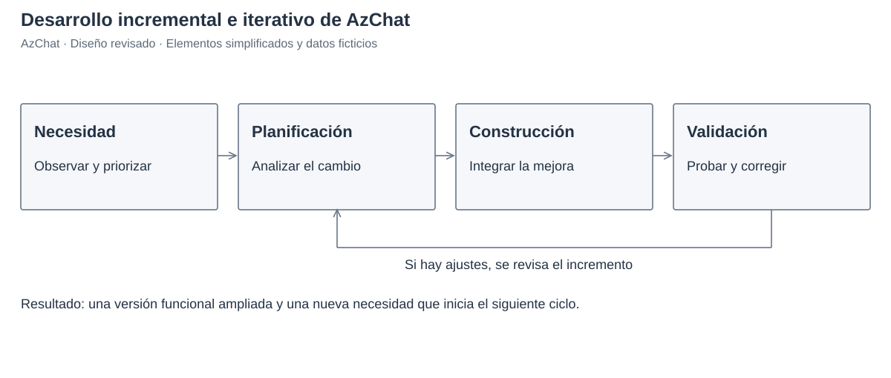

Paso 12 de 12 · Diseño y construcción
Construcción y validación
Cómo se construyó AzChat por incrementos, qué tecnologías intervienen y cómo se revisaron las mejoras.
De la planificación a la construcción
AzChat nació para facilitar la intercomunicación entre estudiantes de la Universidad Nacional del Altiplano. Los pasos anteriores definen el problema, los usuarios, las funciones, los recorridos, la arquitectura y los datos. Este paso explica cómo esas decisiones se llevaron a una aplicación funcional y cómo el uso del sistema originó ampliaciones.
El relato reúne las etapas del trabajo realizado. Los incrementos siguientes agrupan cambios relacionados para facilitar su comprensión; no representan sprints con una duración fija ni un calendario que se haya registrado de antemano. La referencia técnica de esta revisión es Complete 2.10.1, con fecha documental 6 de noviembre de 2026.
Metodología aplicada al trabajo
Para la construcción de AzChat se empleó un modelo de desarrollo incremental e iterativo, con un enfoque adaptativo.
El proyecto comenzó con una planificación inicial que permitió definir las funcionalidades principales del sistema y desarrollar una primera versión funcional.
Posteriormente, durante el proceso de desarrollo, se identificaron nuevas necesidades y oportunidades de mejora. Cada una de ellas fue analizada y planificada antes de proceder con su implementación e integración al sistema existente.
Este procedimiento permitió ampliar progresivamente las capacidades de AzChat, adaptando el desarrollo a los nuevos requisitos sin necesidad de reconstruir completamente la aplicación.
Incremental significa añadir capacidades sobre una base que funciona: después del chat se incorporaron grupos, archivos y audio. Iterativo significa revisar una capacidad ya construida: la navegación móvil y los ajustes cambiaron después de observar dificultades de uso. El enfoque adaptativo permitió priorizar nuevas necesidades y elegir una solución compatible con lo existente.
En cada mejora se siguió un ciclo: identificar la necesidad, revisar el alcance y las partes afectadas, decidir el cambio, implementarlo, comprobarlo e integrarlo. Si la comprobación revelaba un problema, se corregía antes de continuar. Se mantuvo una orientación ágil de entregas pequeñas y retroalimentación; no se atribuye al proyecto la aplicación formal de Scrum ni ceremonias que no se documentaron.


Ampliar diagramaIncrementos e iteraciones de la aplicación
1. Definir el alcance y probar el intercambio básico
La primera necesidad fue demostrar que dos estudiantes podían identificarse, conversar y volver a consultar los mensajes. Se organizaron los requisitos y los modelos de los pasos 1–11, y se construyó una primera versión funcional en la carpeta Web.
Esa versión permitió comprender la comunicación entre navegador y servidor. Al ampliar el producto se conservó Web como antecedente independiente y se trabajó en Complete. Así se pudo evolucionar sin perder la demostración inicial ni confundirla con la versión ampliada.
2. Ampliar la base de cuentas y conversaciones
El intercambio entre dos personas resultó insuficiente para coordinar equipos. Se añadieron conversaciones privadas, grupos, participantes y permisos. El modelo de datos pasó a distinguir la identidad del usuario, la conversación, su pertenencia y los mensajes.
Se preparó otro proyecto de Supabase para Complete y se realizó la copia hacia ese destino, conservando la base original. El servidor usa PostgreSQL con un rol limitado y verifica quién pertenece a cada chat antes de consultar o modificar información. Esta separación permitió probar el sistema ampliado sin convertir la base inicial en el entorno de experimentación.
3. Construir una interfaz para computadora y celular
Se incorporaron el logo de AzChat, los temas claro y oscuro, el perfil y los ajustes. El acceso quedó en un panel reducido; después de ingresar, el chat ocupa la pantalla. Se exploró una adaptación a React, pero se decidió volver a HTML, CSS y JavaScript para conservar la implementación solicitada.
Los bocetos del paso 10 guiaron la distribución y fueron revisados conforme aparecieron necesidades. En computadora la barra puede ampliarse al acercar el puntero; se corrigió que permaneciera abierta involuntariamente. En celular se separó la lista de chats de la conversación y se incorporaron las secciones Chats, Perfil y Ajustes. Se revisaron el desplazamiento entre vistas y la ausencia de scroll horizontal.
4. Compartir materiales y organizar los grupos
Además de texto, los estudiantes necesitaban compartir archivos y trabajar en grupos. Se incorporaron adjuntos y administración de participantes, junto con perfiles con fotografía y descripción. También se prepararon conversaciones de ejemplo y dos grupos, uno general y Los 4 Mosqueteros, para recorrer el sistema con contenido.
El servidor relaciona cada archivo con su propietario y con el mensaje que lo utiliza. Los permisos y límites se comprueban también en el servidor. Los ejemplos ayudaron a revisar la presentación, pero no sustituyen una prueba de capacidad ni convierten conversaciones reales en datos de ensayo.
5. Publicar el sistema para acceder desde otras redes
La ejecución local permitió revisar el funcionamiento antes de compartirlo. Después se preparó la publicación para que los estudiantes pudieran usar AzChat desde cualquier lugar con Internet. El código de Complete se mantuvo en un repositorio privado de GitHub.
Render ejecuta el servidor Node.js y ofrece la dirección HTTPS de la aplicación. Supabase mantiene la base PostgreSQL independiente. Las contraseñas de conexión, el secreto de sesión y las credenciales externas se configuran como variables privadas del servidor. Se revisó el paquete de publicación para excluir archivos de configuración privados y se comprobó la aplicación publicada.
6. Adaptar la conversación al uso habitual del teléfono
El botón Atrás del teléfono inicialmente podía sacar al estudiante de la página. Se integró la History API del navegador para volver desde una conversación, Perfil o Ajustes al listado. Al estar ya en Chats, la navegación permite salir normalmente.
Se añadió grabación con MediaRecorder y reproducción dentro del mensaje, con pausa, avance y velocidad. El micrófono se solicita cuando la persona pulsa el control. La presencia se obtiene con señales periódicas de las sesiones visibles: permite mostrar En línea o la última conexión conocida, sin afirmar que el estado sea instantáneo.
7. Mantener el acceso e incorporar avisos
Se amplió la duración de la sesión a 36 horas desde el ingreso. La sesión se guarda en PostgreSQL y una cookie identifica al navegador; cerrar sesión o restablecer la contraseña puede terminar ese acceso antes del vencimiento.
Se incorporaron un manifiesto web para añadir el acceso a la pantalla de inicio y un service worker para avisos push. El permiso de notificación se solicita explícitamente. En computadora se añadió un sonido breve para los mensajes nuevos, con una preferencia para desactivarlo. Estas capacidades dependen de los permisos y de la compatibilidad del dispositivo; instalar la web no hace que las conversaciones funcionen sin conexión.
8. Revisar la escritura y el contenido multimedia
La revisión de los formularios llevó a añadir mostrar u ocultar la contraseña y confirmarla al crearla o cambiarla. La foto se ajustó mediante encuadre 1:1. Se añadió exportación TXT de un chat, varios o todos los permitidos y se mejoró el reproductor de audio.
Las fotografías de perfil y las imágenes compartidas se abren en un visor. La descarga requiere una acción explícita. Se separaron imágenes y archivos y se incorporó edición previa con recorte, giro, reflejo, zoom y brillo. Cancelar el editor no envía la imagen. Estas mejoras reutilizaron el sistema de archivos y sus permisos, sin rehacer el chat.
9. Corregir la distribución y reducir interrupciones
Los ajustes se organizaron en secciones desplegables. Tras revisar su uso, dejaron de ser una ventana emergente en computadora y pasaron a un panel entre la barra de chats y la conversación. El chat sigue disponible mientras se modifican preferencias.
Se corrigieron las barras de desplazamiento en campos con poco texto, manteniendo el scroll cuando el contenido sí supera el espacio. Se añadió un mosaico de Az y elementos informáticos para ambos temas. Las indicaciones extensas se reunieron en ayudas breves mediante el botón !. Son iteraciones sobre la interfaz existente, guiadas por problemas observados.
10. Incorporar recuperación de cuenta y correo verificado
Se añadió un correo de recuperación opcional y su verificación. La recuperación distingue un correo ya confirmado de uno nuevo, que requiere revisión del responsable. También se incorporaron nombres privados para reconocer contactos sin modificar el perfil que ven otras personas.
El primer transporte de correo se preparó con Resend en modo de pruebas, limitado al destinatario autorizado. Después se integró Gmail API mediante Google Cloud y OAuth 2.0 para enviar desde el correo del responsable. El cambio se concentró en el módulo de correo: los códigos, la revisión administrativa y el restablecimiento siguieron siendo responsabilidad de AzChat. Esta sustitución muestra cómo el enfoque adaptativo permitió cambiar una integración sin reconstruir las conversaciones.
11. Organizar varias conversaciones en computadora
Al usar el sistema apareció la necesidad de revisar un grupo y conversar con compañeros sin reemplazar continuamente la vista. Se planificó un límite de tres paneles y se separó el cierre visual de la eliminación de mensajes. También se reorganizó la barra: tachuela para fijarla, tema junto al nombre, opciones de creación bajo + y ajustes junto al perfil.
La construcción reutilizó el chat existente. Un coordinador JavaScript administra los paneles; cada conversación adicional se presenta en un documento del mismo sitio con su propio compositor. Así se separan el destinatario, el borrador y los adjuntos de cada chat. La ruta de esos documentos exige sesión y solo permite su incorporación desde el mismo origen. Los permisos de la API siguen comprobándose para cada conversación, sin ampliar el esquema de la base de datos.
Después se revisaron el cierre y la reapertura con texto y archivos pendientes, el límite de tres, la ausencia de duplicados y el envío al destinatario correcto. Se corrigió la adaptación mediante pestañas cuando falta ancho y se conservó una sola conversación visible en celular. El fondo ambiental reaparece al cerrar todos los chats y respeta movimiento reducido. Una revisión posterior separó la selección normal de la flecha para añadir al multichat. Se incorporó el reemplazo del panel más antiguo al abrir un cuarto. Además, se corrigió el parpadeo de fotografías conservando los elementos de imagen y las filas de la lista entre consultas periódicas; una foto nueva sí actualiza su representación. Las pruebas comprobaron varios sondeos, cambios de fotografía, cuarta y quinta aperturas y protección de cargas en curso. Esta entrega aplica el mismo ciclo: observar una necesidad, planificar la distribución, integrar la mejora y comprobar los recorridos afectados.
Tecnologías y responsabilidad de cada parte
| Tecnología | Uso concreto en AzChat |
|---|---|
| HTML, CSS y JavaScript | HTML estructura las pantallas; CSS define distribución, temas y adaptación al tamaño; JavaScript controla formularios, navegación y actualización del contenido. Complete no utiliza React. |
| Node.js y Express | Ejecutan el servidor y sus rutas HTTP. Reciben peticiones, validan datos y permisos y coordinan las operaciones con PostgreSQL. |
| Fetch y consultas periódicas | El navegador solicita cambios por HTTP sin recargar la página. Complete consulta novedades aproximadamente cada 1,8 segundos en primer plano y 6 segundos en segundo plano; no utiliza Socket.IO para este mecanismo. |
| PostgreSQL en Supabase y pg | Almacenan cuentas, grupos, mensajes, archivos y relaciones. pg es el cliente que usa Node.js para consultar la base con parámetros. El navegador no recibe las credenciales de la base. |
| Argon2id y sesiones | Argon2id calcula el hash de las contraseñas. express-session y connect-pg-simple administran las sesiones persistidas en PostgreSQL, con cookies protegidas y vencimiento. |
| Canvas, MediaRecorder y HTMLAudioElement | Canvas permite encuadrar y editar imágenes; MediaRecorder graba desde el micrófono autorizado; el reproductor HTML reproduce el audio dentro del chat. |
| History API, manifiesto y service worker | Gestionan el regreso entre vistas, la instalación web y los eventos de notificación. web-push y VAPID se usan desde el servidor para enviar avisos a las suscripciones permitidas. |
| Google Cloud, OAuth 2.0 y Gmail API | Google Cloud configura el proyecto y la autorización; OAuth autoriza al servidor a enviar con la cuenta del responsable; Gmail API transporta los mensajes de verificación. |
| GitHub privado y Render | GitHub conserva el código de Complete con acceso restringido. Render lo despliega y ejecuta en una dirección HTTPS pública. |
| PGlite y Playwright con Chrome | Permiten pruebas aisladas de datos y recorridos del navegador. Se distinguen de las comprobaciones contra el servicio real y de una prueba en teléfonos físicos. |
Cómo funciona la recuperación con Gmail
El estudiante no inicia sesión en AzChat con Google. Ingresar sigue requiriendo su usuario o código y la contraseña de AzChat. Google autoriza la cuenta que envía los correos, no reemplaza la autenticación del estudiante. El remitente configurado es el correo del responsable del proyecto, Antonio.
- El responsable habilita Gmail API en un proyecto de Google Cloud y autoriza el permiso de envío mediante OAuth 2.0. Las credenciales y el token de renovación quedan en el entorno privado del servidor.
- Cuando se registra o añade un correo, AzChat genera un código y prepara el mensaje. Su módulo de correo obtiene o renueva un token de acceso y solicita el envío a Gmail API.
- La persona recibe el correo y escribe el código en AzChat. El servidor verifica su correspondencia, vencimiento e intentos; Gmail transporta el mensaje, pero no decide si el código es válido.
- Si se olvidó la contraseña y se indica el correo ya confirmado, se pasa a la comprobación del código. Si se propone un correo nuevo sin sesión, la solicitud requiere revisión del responsable y confirmación explícita antes de permitir la verificación.
- Después de verificar el código, se escribe y confirma la nueva contraseña. AzChat guarda su hash, consume el permiso de recuperación y revoca las sesiones anteriores. Aprobar una solicitud por sí solo no cambia la contraseña.
Los códigos son de cinco dígitos, duran 70 segundos y permiten hasta cinco intentos. La solicitud administrativa vence en 24 horas y el permiso de restablecimiento dura 10 minutos. El detalle de reglas está en P5. Si Gmail rechaza la operación, AzChat informa del fallo y no afirma que el correo se envió.
El registro de publicación del 5 de noviembre de 2026 identifica Gmail como transporte y registra una entrega verificada. También registra el proyecto OAuth en estado Prueba. Google establece una caducidad de siete días del token de renovación en ese estado para este permiso; debe renovarse la autorización o gestionar el estado del proyecto. Es una condición de mantenimiento del servicio, no una pérdida de los chats.
Referencias técnicas: envío de mensajes con Gmail API y autorización OAuth 2.0 y vencimiento de tokens.
Cómo se integra una mejora sin rehacer el sistema
Por ejemplo, para editar una imagen antes de enviarla se identificó que el cambio pertenecía a la preparación del adjunto. Se añadió un editor en el navegador; al confirmar, su resultado se entrega al flujo de subida ya existente. Se revisaron cancelación, vista previa, permisos y tamaños. El almacenamiento de mensajes y las conversaciones pudieron conservarse.
La recuperación siguió la misma idea: se añadieron verificaciones y solicitudes al modelo de datos y rutas específicas al servidor. Cambiar Resend por Gmail afectó al transporte del correo, mientras el proceso de recuperación siguió usando sus reglas. Cada modificación se integró después de comprobar las funciones nuevas y los recorridos que podía afectar.
Validación y evidencia disponible
La construcción incluyó pruebas de API, recorridos de interfaz en Chrome, bases temporales con PGlite y comprobaciones del servicio HTTPS publicado. Los registros del proyecto describen pruebas de permisos por conversación, sesiones, grupos, archivos, exportación, navegación móvil, edición de imágenes y recuperación. Este documento explica esas evidencias previas; su actualización editorial no representa una nueva ejecución de todas las pruebas.
| Tipo de comprobación | Qué permite concluir y qué no |
|---|---|
| API y datos aislados | Comprueba reglas y resultados con cuentas de prueba: acceso ajeno rechazado, códigos vencidos, sesiones revocadas y permisos de archivos. No mide por sí sola el rendimiento en Internet. |
| Interfaz en Chrome | Revisa controles, teclado, temas y anchos de pantalla; permite detectar paneles bloqueados y desbordamientos. La emulación móvil no equivale a probar todos los teléfonos. |
| Servicio publicado | Los registros de publicación comprueban HTTPS, salud, acceso y operaciones seleccionadas en el destino real. No garantizan disponibilidad permanente ni sustituyen un monitoreo. |
| Correo y notificaciones | Se registra entrega real de correo en la integración Gmail. Las pruebas simuladas de micrófono o push no acreditan todas las condiciones de hardware ni la recepción en cada proveedor. |
Quedan por evaluar de forma específica la carga concurrente prevista, una matriz más amplia de navegadores y teléfonos físicos y la recepción de notificaciones en esos dispositivos. Los criterios siguientes sirven para repetir la aceptación después de cambios importantes.
La revisión del incremento 11 añade una prueba aislada de multichat en Chrome con tres destinatarios, archivos, borradores y seis anchos entre 320 y 1440 píxeles. También se repitieron las comprobaciones API y los recorridos de ajustes y contenido multimedia afectados. Esta evidencia no equivale a una prueba de carga ni de micrófonos físicos.
Criterios de aceptación
| ID y relación | Escenario y resultado esperado |
|---|---|
| CA-01 · RF-01 y RF-02 | Registrar dos estudiantes distintos; rechazar datos inválidos y duplicados; ingresar por usuario o código y terminar el acceso al salir o vencer. |
| CA-02 · RF-04 y RF-05 | Dos estudiantes abren el mismo privado, incluso simultáneamente. En un grupo se aplican roles y no se retira al último administrador si quedan miembros. |
| CA-03 · RF-06 y RF-09 | A envía a B y a su grupo; cada destinatario autorizado recupera una sola copia. Persisten los mensajes al volver a ingresar y se distinguen envío y lectura. |
| CA-04 · RF-06 y RF-09 | Interrumpir antes y después del guardado. Reintentar el mismo intento devuelve un solo registro; reutilizarlo con otro contenido da conflicto. |
| CA-05 · RF-07 y RF-08 | Compartir un material y una nota de voz. Cancelar antes de subir no envía; otra cuenta ajena no descarga; un mensaje eliminado no entrega su adjunto. |
| CA-06 · RF-09 y RF-10 | Paginar y buscar un historial amplio sin duplicaciones ni omisiones. Exportar solo chats a los que pertenece el solicitante. |
| CA-07 · RF-12 | Verificar un correo, agotar intentos y comprobar vencimiento y consumo. Para correo nuevo exigir revisión; aprobar no cambia la clave. Restablecer revoca accesos previos. |
| CA-08 · RF-03, RF-11 y RF-13 | Perfil y ajustes conservan su valor. El nombre privado solo cambia la vista de su propietario. Los avisos dependen del permiso y la sesión del dispositivo. |
| CA-09 · RF-14 y RNF-03 | Completar la conversación con teclado y celular; abrir y cerrar ayudas, visor y ajustes; conservar foco y acceso al regresar. |
| CA-10 · RNF-01 y RNF-04 | La cuenta C intenta acceder al chat A–B por URL y por API: no obtiene historial ni archivos. Una sesión inválida no autoriza operaciones. |
| CA-11 · RF-15 y RNF-03 | Abrir tres chats, enviar contenido a cada destinatario, usar la flecha para enfocar uno ya abierto y comprobar que el cuarto reemplaza al primero. Pulsar normalmente una conversación deja solo ese panel. Cerrar y reabrir conserva el borrador de la página; cerrar todos muestra el fondo. Comprobar tachuela, teclado, temas, pestañas y navegación móvil sin scroll horizontal. |
Escenario de capacidad
Se propone conectar 30 estudiantes en 15 parejas durante 2 minutos, con un mensaje por persona cada 10 segundos. Se evaluará que cada mensaje aparezca en un máximo de 3 segundos con servidor activo y conexión estable. Es un objetivo que deberá medirse, no un resultado de esta planificación.
La evidencia debe incluir hora de envío y aparición, mensajes esperados y recibidos, duplicados, omisiones, fallos y condiciones de red. Se registrará por separado cualquier arranque tras inactividad.
Relación con los modelos anteriores
P4 resume los objetivos en un caso general y desarrolla los recorridos específicos. P7 explica el envío; P8 y P9 distribuyen las responsabilidades; P10 mantiene bocetos esquemáticos de la organización de pantalla; P11 representa la información persistente. P12 conecta esas decisiones con la construcción y la revisión. Los bocetos actualizados expresan el diseño consolidado y su evolución, no se presentan como evidencia de que todos los detalles existieran desde la primera planificación.
Documentos y modelos
Consultar la documentación completa en PDF. Esta página y el documento del paso describen el mismo diseño del sistema.